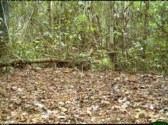
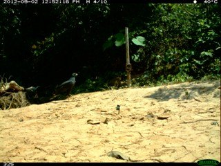
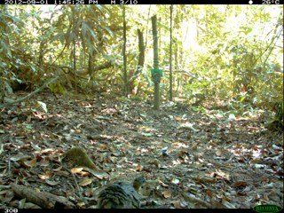
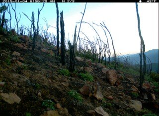

Edge AI for Camera-Trap
Wildlife Monitoring
A TinyML MegaDetector trained on 690,881 images
Why Wildlife Camera Traps Need On-Device AI
Autonomous Field MonitoringMotion-triggered camera traps monitor wildlife non-invasively for months in remote ecosystems, yet hardware and energy limits turn raw data collection into a bottleneck.
Wind, moving foliage, and sunlight shifts fire massive volumes of blank triggers (often 50% to 70%+ of captures), wasting manual review hours and storage.
Remote forest traps run on AA batteries with no cloud link. Writing or transmitting empty frames rapidly exhausts SD cards, battery life, and cellular or satellite quotas.
Classify every frame directly on the camera microcontroller (SRAM ≤ 320 KB, Flash ≤ 1 MB, 35 ms latency) to discard blanks before saving or sending.
Why We Pivoted from Bird Detection to 4 MegaDetector Classes
Hardware-Aware Scope- Trained mcunet-in3 on 36,193 images (85.45% val on held-out cameras).
- Collapsed to 66.39% on 4 unseen datasets: 82% of errors (1,761 / 2,151) were missed birds.
- Physical bottleneck: small bird size, rapid agility/blur, and low 176×176 MCU input resolution.
- Pivoted to animal · empty · person · vehicle, matching what 176×176 optics resolve reliably.
- Discards wind-triggered empty frames on-device, saving battery, SD storage, and transmission bandwidth.
- Scales cleanly to 690,881 images with 0.905 macro-F1 in 786 KB INT8 Flash.
Same mcunet-in3 backbone (~577k params, 786 KB INT8): aligning the task to low-resolution edge hardware unlocks field-grade accuracy.
690,881 Images with Zero Camera-Location Leakage
4 Classes · 4 Sources · 80 / 10 / 10Imbalance Handling: Severe 34:1 skew (animal vs. vehicle) balanced via square-root inverse class weights during training.
Anti-Leakage Guarantee: Deterministic MD5 hash by camera location keeps every background strictly in one split (plus independent split_v2 for scarce classes).
Denoising Burst Sequences with MegaDetector v5a
3–10 Frame Burst Problem3–10 frames/trigger sharing one noisy sequence label.
Positive: conf ≥ 0.5 & area ≥ 0.5%.
Empty: all boxes < 0.10.
1 frame / sequence, round-robin by site/species, rescue CCT person ≥ 0.8.
690,881 audited frames ready for mcunet-in3.
1 in 4 sampled Caltech "empty" sequences hid a visible animal under MDv5a.
Substring matching mislabeled mongooses as birds, fixed via LILA Aves taxonomy priority.
Replaced a silent "no-annotation" fallback with explicit "empty" category matching.
Model Architecture: mcunet-in3
Zero-Float Input Normalization: 176×176×3 mapped to [-1, 1] (pixel/127.5 − 1) compiles directly to pure integer q = pixel − 128 in INT8.
Config-Safe Custom Head: Uses MCUNet's LinearLayer(160 → 4, dropout=0.25) instead of raw nn.Linear to preserve model.config serialization.
Two-Phase Fine-Tuning Jumps Val Accuracy 82.5% → 90.0%
CUDA GPU · ~1h 16m · Early StoppingUnfreezing the backbone at Epoch 4 delivers a sharp +7.5 pp validation jump; early stopping halts after 6 stagnant epochs.
Phase 1 (3 ep): Head-only (AdamW 1e-3, frozen BN) protects pretrained weights.
Phase 2: Full fine-tune (6e-5 backbone / 3e-4 head, CosineLR).
RandomGrayscale(p=0.25) simulates monochrome infrared camera traps; √-inverse weights (0.72 / 0.75 / 2.04 / 4.39) + label_smoothing=0.05 tame the 34:1 skew.
Full frames are squashed to 176×176 without center-cropping during val/test, ensuring wildlife entering along frame borders is never discarded.
Custom TF2 Rebuilder Achieves 100% INT8 Parity Above 0.7 Conf
Full INT8 · Zero-Float Input.pth & .pt2 (torch.export diff 0.00).
Bypasses broken TF1 script; exact pad → max |Δ| 2.21e-6.
Calibrated on 800 imgs; input q = pixel − 128.
.tflite, model_data.h/.cc, main_example.cc, manifest.json.
- Replaces broken TF1 converter: MCUNet's repo calls deprecated tf.Session; our layer-by-layer TF2 rebuilder folds BatchNorm in float64 for exact float parity (100% TFLite FP32 match, max |Δlogit| = 2.21e-6).
- Zero floating-point math on MCU: Because inputs normalize to [-1, 1], INT8 quantization simplifies to a single byte subtraction: q = pixel − 128.
Virtually all INT8 disagreements occur on genuinely ambiguous borderline frames (conf ≤ 0.7), with zero flips on confident triggers.
Flash Passes (786 KB), But Explicit PAD Breaks 320 KB SRAM
Critical Bottleneck IdentifiedMinimal 6-op TFLite Micro resolver keeps firmware binary small.
Explicit PAD allocates a full padded copy alongside its input tensor (389 KB peak). Switching to TinyEngine (293 KB) or fusing padding directly into CONV_2D brings SRAM safely under 320 KB.
88.47% Test Accuracy & 0.905 Macro-F1 on 66,027 Images
FP32 · Unseen Camera LocationsRare vehicle (0.948) and person (0.936) classes outperform common categories, proving √-class weighting works.
Dense-foliage WCS camera traps (40,000 test imgs) account for the bulk of remaining classification difficulty.
91.8% of All Errors Are Mutual animal ↔ empty Confusions
7,615 Mistakes / 66,027 Test Imgs- Distant & camouflaged wildlife: small animals in WCS undergrowth or nocturnal IR drive the animal ↔ empty boundary.
- Clean safety classes: person (96.9% recall) and vehicle (94.8%) represent only 8.2% of all errors.
Real Camera-Trap Frames: Successes vs. animal ↔ empty Failures
WCS & CCT Test Samples
empty · WCS
animal → empty (84%)
animal → empty (84%)
empty → animal (89%)Three Steps to Autonomous Field Deployment
SRAM · Data & Patches · Licensing- Fuse or remove the 4 explicit PAD ops causing the 389 KB spike.
- Compile via TinyEngine (293 KB) with NumPy < 2 patch (int8=128 OverflowError).
- Further improve and expand training data to strengthen generalization across hard field scenes.
- Perform patch detection on the original image to preserve fine detail and improve video quality.
- Tune thresholds & IR augmentations to cut dense-foliage animal ↔ empty errors.
- Replace non-commercial ImageNet-1k (and pilot CUB-200) prior to any commercial release.